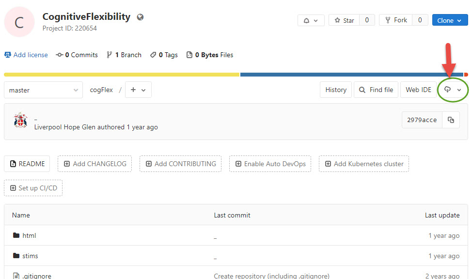

Psychology Labs and Resources

Department of Psychology
Experiment Bank
I am working on building up a bank of experiments to allow staff and students to run experimental projects with more ease, and to help speed up the process of programming experiments. Below is a list of tasks that have already been developed. Some will run on Pavlovia (online experimental studies) and some will run in a face-to-face lab based environment.
There are also a number of templates to help you to learn how to do common tasks, such as counterbalancing or allowing a participant to go back and forth through instructions to ensure they understand.
Experiments are hosted on GitLab and each experiment has a link to the specific GitLab Repository. In each of these you will find all of the resources that you will need to download to your own computer, modify and then upload to run on Pavlovia.
Accessing the studies in GitLab
- You should create an account in Pavlovia using your @hope credentials. This will also allow you automatic access to a GitLab repository. If you do not use your @hope email address to register, you will be unable to run your study online
- You can use the links below to download a template or project from Git 
- Once downloaded you will be able to open the .psyexp file and edit to suit your experiment
| Stroop Test | In this task participants must report the colour of the letters spelling each word, but letters themselves also spell a colour name and this may be the same or different to the colour of the letters. Stroop (1935) reports that reaction times are slower the letters spell a colour that is incongruent with the colour of the letters, indicating a compulsory automated reading of the word. |
|---|---|
| Download Link | |
| Stroop, J. R. 1935. Studies of interference in serial verbal reactions. Journal of Experimental Psychology 18: 643-662 | |
| Task Name | |
| Task info | |
| Download Link | |
| Reference | |
| Task Name | |
| Task info | |
| Download Link | |
| Reference | |